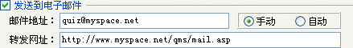
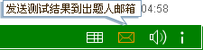
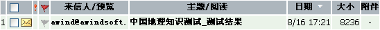
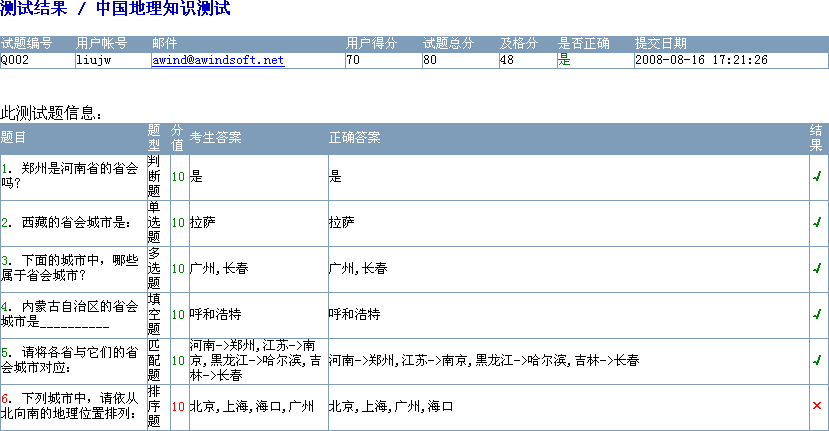

| 数据收集 - 邮件接收 |
|
邮件接收设置部分如下图所示：  其中参数所所表示意义，在属性设置->结果设置里已叙述过，这里说明一下其工作流程。 当您勾选[发送到电子邮件]选项时，你就使用了试题大师所提供的测试结果邮件接收功能。需要注意的是，邮件接收的两个选项，手动模式与自动模式。 Ø 手动模式 当您选择了[手动]模式，请确保在播放器的播放器设置中勾选[邮件发送]及其上级，这样测试者在做完测试题后，会在工具栏右上角显示一个邮件发送按钮，如下图示；点击它后会执行邮件发送操作，试题会根据是否发送成功，会给出相应提示。  Ø 自动模式 而您若是选择了[自动]模式测试者做完试题后，试题会自动向您设定的邮件地址发送邮件。它不会显示发送按钮，也不论是否发送成功，均不会给测试者任何提示。 Ø 工作原理 邮件接收使用了网络转发的原理，因此若要使用此功能，测试者在做题时，其计算机必须能够上网。当测试者做完试题后，执行此功能，其测试结果、您设定的邮件接收地址及测试者的信息会被发送到您设定的转发网址（请参考安装目录samples下Asp例子中的mail.asp文件及PHP例子中的mail.php文件），其网址接收到信息后，对信息进行处理，然后发送到您所设定的邮件地址。这里支持多个邮件地址，其间用半角逗号[,]来分隔，如quiz@myspace.net,quiz@yourspace.net等。 提示：若您要用自己的mail.asp来转发，请确保服务器支持JMail组件，它可以用Asp探针来检测。 若您没有搭建自己的数据收集系统，可用[http://www.awindsoft.net/qms/mail.asp]来实现此转发功能。 Ø 邮件显示 当您正确对其进行设置之后，若有测试者做您出的试题，并且执行邮件发送或您设定为自动发送后，您就可以接收到测试结果的邮件数据了，如下图示：  而其中格式，为一html文件，为试题大师所设定，出题人不能改变。它分两栏显示信息，一栏是测试信息总揽，一栏是详细的试题信息，如下图所示：  |